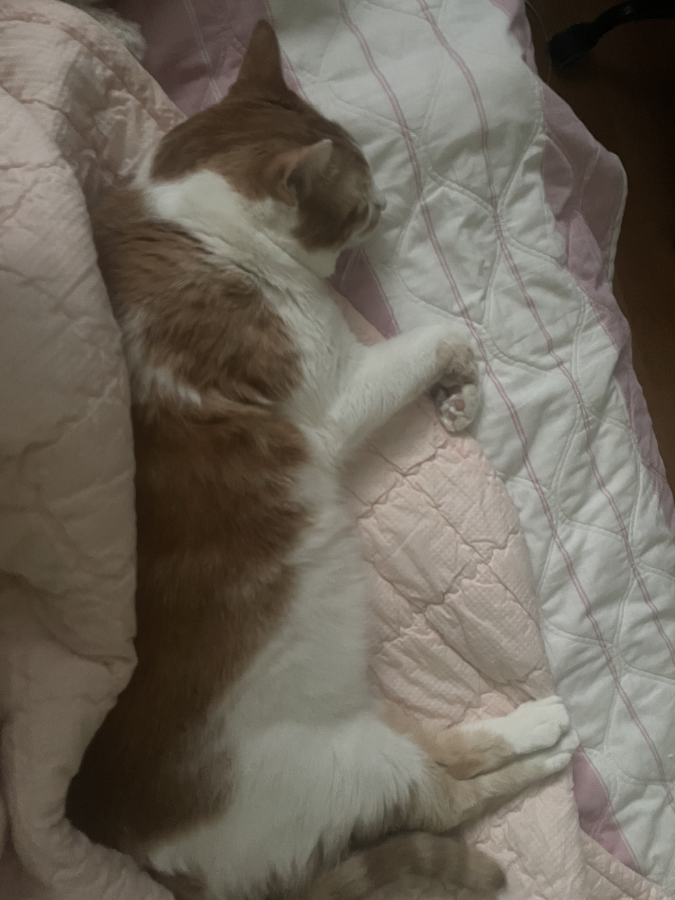
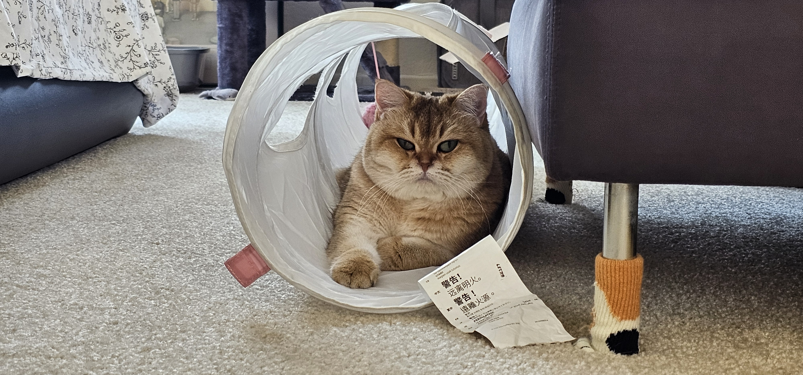
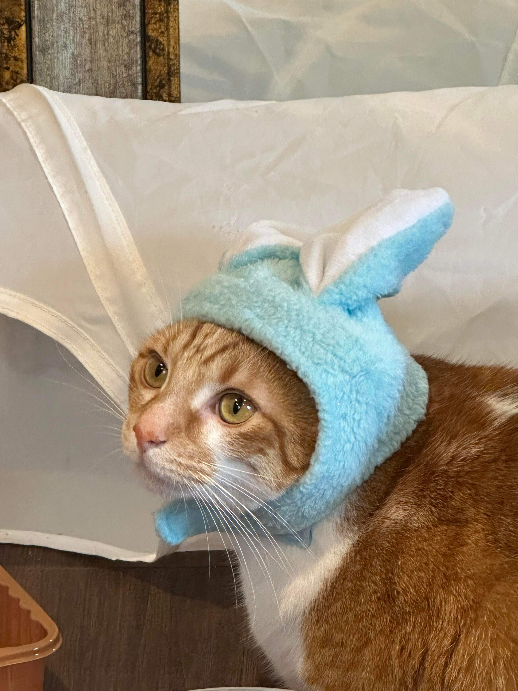

Bacon Q Dog

Bacon Q. Dog is a 9yr old labradoodle. He prefers to spend his days lounging among the three different beds/couches that his family has gifted him. He enjoys a walk or two around the neighborhood, as long as he can pretend that he doesn't see any of the other animals to avoid the embarrassment of not wanting to admit he has no wolf-like skills in chasing them.
At night just as the rest of the family is ready to relax, Bacon suddenly wants to release all of his energy. He will place his toys on a mini couch and frantically drag the couch around, giving his toys "a ride." There is also a lot of rolling. Lots and lots of rolling.
Likes
- Belly rubs
- Playing tug-of-war
- Sneaking onto the couch
Peaches
Peaches is a 7yr old tabby cat. He is a very curious cat and loves to explore. He is very friendly and loves to be around people. He is very affectionate and loves to cuddle. Peaches is very vocal and loves to talk to his family. He is very sweet and loves to be around his family.
Likes
- Playing with toys
- Chasing laser pointers
- Being around people
Emma
Emma is a 4yr old grey cat. She is very shy and takes a while to warm up to people. Emma was born in Russia. She flew to South Korea before joining us in the U.S. She is very sweet and loves to be around her family as well.
Likes
- Playing with toys
- Chasing laser pointers
- Being around people
Remy

Remy is a 5yr old light brown and grey cat. Her and Emma are the most affectionate and loving cats that I have interacted with.
Likes
- Finding surfaces to lay on
- Cat treats
- Being around people
Kong
Likes
- Hissing at people
- Biting ankles
- Being Fed
Photo Gallery


Likes
- Belly rubs
- Playing tug-of-war
- Sneaking onto the couch